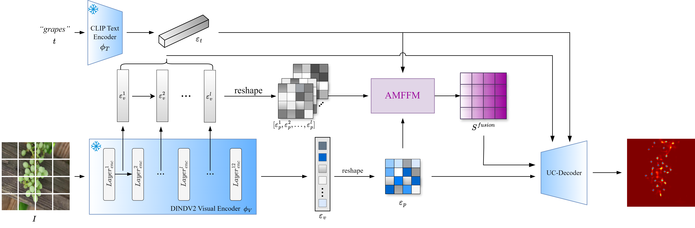

方案一
AMS-Counter: 空间-频域多视角融合
💡 Motivation / 动机
传统CNN仅在空间域提取特征，受限于局部感受野，难以捕捉密集场景的全局密度分布。复杂背景（如树木、阴影）易导致特征混淆。引入频域信息（Frequency Domain）可提供对噪声鲁棒的全局上下文视角。
多视角特征融合模块 (AMFFM)
构建双流架构，并行提取空间域的纹理细节与频域的幅度/相位谱特征。通过交叉注意力机制实现互补信息的深度融合，显著提升特征的判别力。
无偏快速傅里叶卷积 (UFFC)
基于FFT实现频谱卷积，利用其全局感受野特性捕捉图像的周期性密度模式，有效克服局部卷积在极高密度区域的“视野盲区”问题。
自适应跳过连接 (ASC)
引入可学习的门控机制，动态调节深层语义特征与浅层细节特征的融合比例，解决小目标在深层网络中信息丢失的问题。

图：AMS-Counter 基础网络架构示意